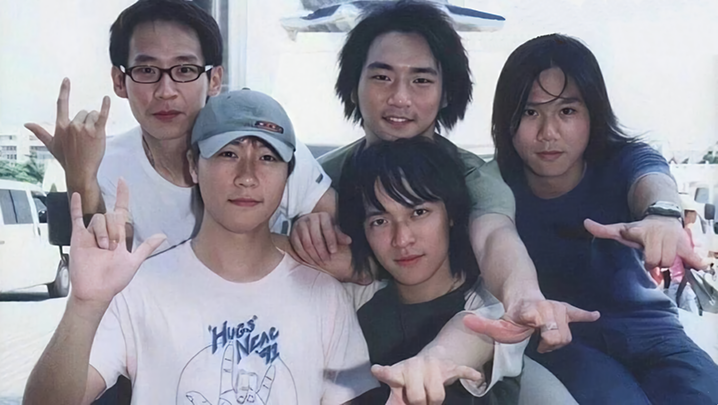

1999年春晚，当赵丽蓉盘着腿，坐在凳子上哼唱《My Heart Will Go On》时，台下的任贤齐笑得特别开心，一个劲地给这位老人鼓掌。
在赵丽蓉登台之前，他刚刚唱完《对面的女孩看过来》。此时的小齐有一万个开心的理由。在内地，他已是人气最高的港台歌星之一。除了春晚唱的这首，《心太软》《伤心太平洋》《任逍遥》的歌声，也随时会在全国各地的音像店里响起。
那一年的华语歌坛，数台湾最热闹，能和任贤齐抢一抢风头的歌星，大有人在。
张惠妹发布第5张专辑，《我可以抱你吗》《三天三夜》等歌曲传唱度惊人；李玟推出《今天到永远》，此后转签美国索尼娱乐，晋升国际乐坛；陶晶莹凭借《我变了》迎来事业转折，《离开我》《姐姐妹妹站起来》成为热唱金曲。
张宇的《雨一直下》，淅淅沥沥地浇在无数人心底；张信哲发布《回来》以及单曲《爱就一个字》，与《宝莲灯》一起火遍全国；陶喆拿出《I'mOK》，融汇国乐、摇滚、电音等元素，尽情释放音乐才华。
已经决定单飞的光良与品冠，留下浓墨重彩的告别之作，他们推出新专辑《想见你》，还出了一张精选集，为无印良品的四年时光留下一份沉甸甸的记忆。
王力宏那张棱角分明，年轻帅气的脸庞，也是在这一年走进我们的记忆。凭借《不可能错过你》这张专辑，他成为华语歌坛的优质偶像。
娃哈哈集团总裁宗庆后，认定王力宏是娃哈哈纯净水独一无二的代言人选。面对宗庆后的诚意邀请，他决定与娃哈哈合作。广告播出后，那一句“爱你，等于爱自己”成为1999年最经典的广告词之一。
这是王力宏第一次做代言，没人能够预测，这一代言就是20年，娃哈哈从未换过人，他也没有要求涨代言费。
20年的时间淹没了太多记忆，但好在有一些人，一些事，从未改变。
已成名的人享受着世纪末的荣耀，而面对即将到来的新千年，很多初闯乐坛的年轻歌手，纷纷选择在1999年发表新人宣言。
19岁的蔡依林，19岁的容祖儿，20岁的萧亚轩，21岁的梁静茹，22岁的周惠，都在1999年发布了她们的第一张专辑。
校园里，也潜藏着改变华语歌坛的新鲜力量。90年代末，台湾高校掀起着一股组建乐队的热潮，其中有一支乐团，名叫SoBand。乐团成员有主唱阿信，团长兼吉他手怪兽，贝斯手玛莎，吉他手石头和鼓手冠佑。他们立志要做台湾的披头士，希望自己的音乐也可以改变世界，把爱传递到全世界。
乐团成立后，他们在校园，酒吧，广场，一场接一场地演出，迷上他们的年轻学生越来越多。1997年3月29日，他们给乐团换了一个新名字——五月天，这也是贝斯手玛莎在网络论坛里的ID。
1999年，对五月天意义重大，他们在7月发布第一张唱片：《第一张创作专辑》，卖出30万张，就此从地下走到地上。
此后多年，五月天为一批又一批年轻人留下了难忘的青春记忆。不想丧下去的时候，他们会在五月天的歌里寻找向前的勇气，就算现实不如意，也要坚持、也要有梦。
后来，有人问五月天，如果没有组乐团的话，五个人会过着怎样的生活。石头说会当科学家，冠佑选择去拉二胡，怪兽会继承家业当律师，玛莎会做上班族，而阿信则笑称，去跟其他人组团。
有意思的是，在个人简介中“最棒的成就”一栏，阿信填的是“海绵宝宝死忠粉”。而《海绵宝宝》动画片，也是在1999年开播的。
1999，有人在期待更美好的未来，有人想好好告别灿烂的过往。
12月31日夜，20世纪的最后一个晚上，罗大佑和李烈、苏芮，坐在香港的一条赌船里，一边唱歌，一边看着东方之珠的夜景，告别即将远去的20世纪。
多年以后，罗大佑回忆起那个特殊而又平常的夜晚，说如果世界末日真的在那一刻来了，那么在船上也不错，挺浪漫的。结果什么事情都没有发生，当时还有一点失望。
1999这一年，罗大佑没有发布新专辑，他写了一首歌，歌里没有追忆光阴，也无关风月。
然而，一心迎接新千年的年轻人，越来越不在乎世界的嘈杂，更关注自己青春里的小情小爱，罗大佑写的这种歌，难以在他们中间传唱。
罗大佑在这一年接受采访时，总是会遇到这样一个问题——21世纪后，歌坛还会出现一个罗大佑吗？
想做出肯定回答谈何容易。能够成为“音乐教父”的音乐人，不论是他们的才情个性，还是他们所在的时代，都是独一无二不可复制的。即便出现新教父，那个人也不会是第二个罗大佑，而是第一个自己。
就在罗大佑准备坐在船里告别1999年的前几天，一个只有20岁，没有多少人知道他名字的年轻人，抓住了成为他自己的机会。
两年前，他写了一首非常奇怪的《菜谱歌》，参加吴宗宪主持的《超猛新人王》，朋友唱，他伴奏，结果朋友唱得特别烂。但吴宗宪一看乐谱，惊为天人。他认定眼前这个留着中分穿着白色Polo衫，长得不算帅的年轻人是个奇才，随后就把他和词作者方文山签入自己的阿尔法公司。
这个年轻人，就是周杰伦。
加入阿尔法后的两年多时间里，周杰伦一直在幕后为那些大明星写歌。1999年，他和方文山终于开张，《落雨声》成为他们第一首卖出去的作品，收录在江蕙的《半醉半清醒》专辑，大卖90万张。在金曲奖上获得特别贡献奖时，江蕙特别感谢他们说：“这首歌让我赚了不少钱！”
但两年多的幕后生涯，周杰伦经历的挫折远比收获多得多。他曾给刘德华写过歌，但华仔觉得歌词有些不伦不类，看完就扔到一边；他还为张惠妹写了一首《双截棍》，结果A Mei说，我本来是唱“听海哭的声音”那种，让我唱哼哼哈嘿，像什么样子。
关键时候，吴宗宪拿出伯乐的魄力，既然没人愿意唱周杰伦的歌，那干脆就把他推到台前，让他自己唱。但决定之前，吴宗宪还想再考验一次周杰伦。1999年12月的一天，吴宗宪将周杰伦叫到办公室，对他说，如果能在10天时间里写出50首歌，他就可以从中挑出10首出唱片。
兴奋的周杰伦回到工作室后，并没有着急开始写歌，而是跑到大街上买回了一大箱方便面。他知道，这可能是他的最后一个机会。
接下来的十天里，周杰伦一直“蜗居”在几平方米的工作里，饿了就泡方便面充饥，困了就在房间的角落里打个盹儿。
结果，周杰伦真的拿出了50首歌曲，每一首都写得漂漂亮亮，曲谱得工工整整。吴宗宪无话可说了，于是，周杰伦的第一张专辑《Jay》，就这样开始制作。
新千年的钟声即将敲响，一个属于周杰伦的时代，正在缓缓拉开大幕。
但世纪末的香港歌坛不复80年代的群星璀璨，也没有发生“谭张争霸”“天王争霸”的现象级事件，凋零的迹象已经显现。
最令歌迷操心的一个问题就是，谁能接班“四大天王”。
或许是不想费心追赶时代洪流，或许站在山顶的时间太长有了倦意，张学友、黎明在1999年先后宣布放弃“四大天王”的称号，同时也不再参与任何乐坛奖项的争夺。
郭富城对这一头衔仍有留恋，但也不得不承认过去的辉煌已经过去，要学习新的东西。然后，他远赴日本，为了拍《浪漫樱花》苦练Para Para。
只有刘德华还在执着地继续当华仔，他并不认为四大天王已成过去时：“我自己是肯定没有过气的，那我厚道地说，你们仨也没有过气好了。”
然而，旧日就算再辉煌，在更加漫长的明天面前，也终将变得不再重要。
或许是四大天王对香港歌坛的垄断，持续得实在太久了，令迟迟得不到出头机会的新人感到窒息，外界的质疑声此起彼伏。
想当年，何勇那番“四大天王除了张学友都是小丑”的言论，被香港歌迷定性为哗众取宠。但到了1999年，就连香港人自己都发出了抨击的声音，说居然有三个不懂音乐，不认真唱歌的人，常年垄断香港各大音乐颁奖，并一直凌驾整个华语乐坛。
年底，王朔炮轰金庸时，四大天王也不幸躺枪，被他打入“四大俗”之列。
不论那是最好的时代，还是最坏的时代，四大天王对香港乐坛的漫长统治，似乎注定将在这一年被终结。
在1999年度十大劲歌金曲颁奖典礼上，四大天王对金曲金奖长达8年的垄断终于被打破——郑秀文凭借《插曲》拿到了这个重磅奖项。
巧的是，在同一年的叱咤乐坛流行榜颁奖典礼上，他们对男歌手金奖的统治也宣告结束。得奖的不是别人，正是郑秀文的恋人许志安。
而1999年，是许志安与郑秀文相恋的第七年。郑秀文被拍到与古天乐一起K歌，小报上那些她与谢霆锋相恋的八卦绯闻，都未能让这对感情深厚的恋人陷入七年之痒。
这一年，郑秀文开演唱会时，发生罕见的停电事故，舞台一片漆黑，惊慌失措的她大喊：“安仔，救命……”台下的许志安二话不说，立即飞扑上台，为郑秀文擦去眼泪，两人一起合唱了《唯独你是不可取替》。
此后多年，这首歌一直是郑秀文在演唱会上的必唱曲目。在二人歌迷心里，这首歌就是他们爱情的见证。
但就在十几天前，歌迷们才终于发现，恐怕《钟无艳》的主题曲《情无独钟》更能唱出两个人之间的纠葛：
谁貌似花美艳
是谁努力照亮半边天
但是情无独钟
贪心的你偏爱哪一边
如果有人在1999年问香港歌迷，谁最有希望接班四大天王，最多的答案肯定是谢霆锋。
曾为刘德华写过《忘情水》的音乐人林利南，亲自操刀谢霆锋的第一张专辑《谢谢你的爱1999》。这张国语大碟推出后，马上在两岸三地引起了极大轰动。
整个1999年，谢霆锋担任3个形象大使，参演5部电影，发行3张专辑，获得数10个音乐奖项，全年唱片总销量突破100万张。
至此，谢霆锋正式坐上“中国首席偶像歌手”位置，风靡整个亚洲流行乐坛。形象叛逆、英俊不羁，只有19岁的他，征服无数少男少女。
就在谢霆锋火速蹿红的时候，黎明正在为花旗银行信用卡的广告寻找男主角，要求是“阳光帅气大男孩，会说一口流利英语”。
恰好，陈冠希的父亲与黎明私交甚好，就向他推荐了19岁的儿子。完全符合黎明标准的陈冠希，得到了这个机会。
拍完广告，陈冠希马上拿到了娱乐公司的合约，就此正式进入娱乐圈，踏上成为新生代超人气小天王之路。
那时的互联网还不像今天这样铺天盖地，世界上最大硬盘的容量也不过10个G，更没有人想给手机装上摄像头做直播。可能谁也想不到，正是这些当时还在发展中、孵化中，令人无比期待的科技，将在十年、二十年后，比唱片是否好听、电影是否大卖更能决定陈冠希的命运。
更没人能够想到，一个当时仅有9岁，每天最大乐趣是打开小霸王玩魂斗罗的四川小男孩，将在20年后与陈冠希产生交集。他的粉丝会在网络上，与陈冠希进行一场毫无道理的混战。
这个男孩的名字，叫孙笑川。
时代的魔幻，现实的荒唐，莫过于此。
偶像总会诞生，唱将却难寻觅。四大天王中最难接班的，当数歌神张学友。
而在20世纪末，25岁的陈奕迅，一度被视为可以接班张学友的歌手。
那还是1995年，陈奕迅从英国留完学回到香港，报名参加了TVB新秀歌唱大赛。在大赛上，他改编Beyond的《真的爱你》，清唱李克勤的《偷偷摸摸》，模仿张学友的《望月》，最终赢得冠军。之后他与唱片公司签约，正式进入香港乐坛。
1996年夏，陈奕迅推出首张专辑《陈奕迅》。封面上的他留着偏分，双手插在裤袋里，眼睛直直地看着镜头。结果，这张朴实无华的专辑发行后，未能在市场掀起任何风浪。陈奕迅这三个字，在记者眼里毫无看点可言，那时他与女星徐濠萦传出绯闻，结果报纸标题连他名字都没提，写的是“徐濠萦与新秀比赛冠军拍拖”。
回忆起当年种种不顺，陈奕迅说： “一开始公司将我视为张学友的接班人，形象定位是西装革履的绅士。无论是形象还是曲风，都不是我想要的，当然火不了。”
直到1999年，陈奕迅才再一次被推到公众面前。年底，他发布国语专辑《婚礼的祝福》，粤语专辑《幸福》，确立了他平实亲切、感情充沛的个人音乐风格。
在十大劲歌金曲颁奖典礼上，他登上舞台，悠悠地唱起《幸福摩天轮》：
失落之处仍然会笑着哭
人间的跌荡，默默迎送
当生命似流连在摩天轮
幸福处随时吻到星空
惊栗之处仍能与你互拥
仿佛游戏之中，忘掉轻重
那一刻。他和他的歌迷都是幸福的。没人会去想，多年以后，荒芜的香港乐坛要靠他一人撑起。
时光一去20年，香港乐坛的难题已经变成了——谁来接班陈奕迅？
恐怕这个问题已经无解，因为在乎答案的人越来越少。
而且他们会发现，越是在乎这个问题，就越会和这个狂欢年代格格不入，与其找寻失望的答案，不如就让那些永不过时的老歌陪着自己继续走下去。
1999年初，传奇天后梅艳芳第一次，也是最后一次登上春晚舞台。她唱的是《床前明月光》，歌词引用李白家喻户晓的名诗《静夜思》。
为了这次春晚演出，梅艳芳花重金设计形象，还订购了上万元的服饰。她把东方元素与欧美电子乐融为一体，幻化出奇异的哥特画风，意在塑造一个看破人间悲欢的幽魂，并用夸张鬼魅的肢体动作表达李白纵酒放歌、独行于世的悲苦心境。
但在大多数观众眼里，梅姐这个表演太超前、太难以接受。从编曲、演唱到服装，舞蹈，没有什么地方能用“正常”来形容，都在挑战观众的审美。加上演出前排练匆忙，灯光与画面切换等技术环节没有协调好，出来的效果便是看到她一个人“张牙舞爪”；更要命的是音响也出了问题，她的耳麦连自己的声音和伴奏都听不到，只能凭感觉去唱。
演完之后，梅姐也觉得自己“唱砸了”，潸然泪下。
不过，此时的梅艳芳已经淡出香港歌坛。整个1999年，她最重要的音乐活动就是自己的“百变梅艳芳演唱会”。
这个芳华绝代的瞬间，永久地刻在了1999年。
老天后的衣裳闪烁着落日般的美丽余晖，新天后的皇冠更是光芒璀璨。
皇冠的主人是王菲，她在1999年正处事业巅峰，忙了整整一年。
日本知名游戏公司Square的老板十分喜欢王菲，他出资300万美金，邀请王菲演唱日本国民级别游戏大作《最终幻想8》的主题曲。
王菲欣然接受邀请，在录音棚里唱了4个小时，最终用天籁之音完成了那首《eyes on me》。这张单曲专辑光是在日本，就大卖500多万张。亚洲EMI老板说，仅此一曲，王菲就为公司大赚6000多万港币。
1999年3月，一连两场的“FayeWong Japan-Tokyo”演唱会在日本东京武道馆揭开序幕，能容纳一万名歌迷的场馆里座无虚席。台下，嘉宾席里也是星光熠熠，第一场来了木村拓哉与酒井法子，第二场来了竹野内丰与张国荣。期间，柏原崇像个粉丝一样，狂热地向王菲要签名。
但多年后，人们回忆起这场演唱会，提及最多的名字还是窦唯。
在演唱会上翻唱黑豹经典《Don’t break my heart》之前，大屏幕中播放着王菲、窦唯带着女儿坐电车的甜蜜画面。随后，铿锵有力的鼓点响起，敲鼓的人，正是窦唯。紧接着，王菲身穿一袭白色长裙，乘升降机惊艳登场。这一曲，成为华语音乐现场最经典的时刻之一。
令人唏嘘的是，两人的感情当时已是濒临破碎。坊间八卦沸沸扬扬，说窦唯已和他的摄影师高原同居，他和王菲的婚姻早已名存实亡。
那场演唱会结束不到1个月，窦唯在北京一家酒吧现身，结果遭到很多香港记者追踪。窦唯从一楼躲到二楼以求清净，记者们依然不肯离去，其中有一个还追着问他，是不是被王菲赶出家门了。窦唯大怒，将手中的可乐泼了出去，正好泼在了香港亚视主持人黄丽梅脸上。
虽然这件事最后并没有闹大，以窦唯赔偿告终，但可以看出他与娱乐圈格格不入，根本不懂得应对媒体的套路。一位好友气愤地为窦唯打抱不平：“如果他不是娶了王菲，而是一个普通点的人，他都不会被烦成这样，他只是一个埋头做音乐的正常人，不是一个明星，他不会游戏规则。
林夕曾说，王菲是我的大女儿，我和她是没有名分的夫妻。1999年，他为王菲填了一张《只爱陌生人》。里边有一首歌《百年孤寂》，似乎在含蓄隐晦地诉说着王菲这段情感经历：
悲哀是真的，人是假的，本来没因果。
1999年10月，王菲和窦唯的3年婚姻走到尽头。
早在1994年，当王菲与窦唯正处热恋的时候，他们曾对1999年充满幻想，并一起写了一首《出路》，她作词，窦唯编曲。歌里唱到：
听说1999年是世界末日
到时候我们一定要结婚
......
或许多年以后，当王菲回想起1999这一年时，只有窦靖童才能成为她最快乐的记忆。那一年窦靖童只有两岁，王菲录《只爱陌生人》时，把她的声音录了进去。
眼下，当初那个嗲嗲地唱着“Come on baby”的小Baby，已成长为一名对爵士、蓝调、Funk等风格驾轻就熟的音乐人，很多人说，她有着和她爸一样的气质，还有和她妈一样的嗓音。
也有人说她谁都不像，或许只是人们无法忘记王菲，无法忘记窦唯，同时想让一段爱恋留下好的结局罢了。
世纪末，涌入内地的滚石、华纳、环球、百代、艺能动音等国际唱片公司，已不再满足于售卖港台歌星的唱片，纷纷发力挖掘内地歌手，并进行国际化的商业运作。
回望1999年的内地音乐，女有那英，男有孙楠，两人风头出尽。前者的《梦一场》，后者的《你快回来》《不见不散》，都是当之无愧的年度金曲。
两名关系好到可以穿一条裤衩的酒吧歌手——陈羽凡和胡海泉，在这一年与滚石签约，组成“羽泉”推出专辑《最美》，二人包办其中四首歌曲。滚石前辈周华健也非常欣赏他们的才华，亲自创作了专辑中的那首《转弯》。
从此，这个组合在内地称霸十年，直到后来，凤凰传奇崛起。
假如沈腾穿越回1999年，他已经无法像夏洛那样，盗用许巍、朴树的作品享受开挂人生了。因为这一年，许巍发布了第二张专辑《在路上》，而朴树已经红了。
不知有多少学生的歌词本，在那一年里出现这样几行字：
那片笑声让我想起我的那些花儿，
在我生命每个角落静静为我开着 。
这句歌词来自朴树的《那些花儿》，发行于1999年，来自他的第一张专辑《我去2000年》。
这个25岁的青年，对未来的态度既有期待，也有怀疑，充满矛盾。他在《NewBoy》里说“我们的生活甜得像糖”，却在《我去2000年》里来了一句“这个操蛋的年代”。
这种矛盾，何尝不是世纪末的集体情绪。
知识爆炸将淘汰跟不上时代的人，千年虫危机将令世界陷入瘫痪，1999年最后一天将成为世界末日......诸多令人恐慌的传言，在媒体里、在人群中蔓延。但对新千年、新世纪的期待，也是无处不在，人们终究还是选择相信明天会更好。
尤其是那些校园里的“新新人类”，只恨时间过得太慢，一心盼着属于自己的时代早点到来。
但有几位玩乐队的“新新人类”，在1999年就迎来了自己的时代。他们的乐队名叫“花儿”，主唱叫大张伟，只有16岁。
他们在这一年出了第一张专辑《幸福的旁边》，卖了四五十万张，比朴树的《我去2000年》还火。
乐评人称赞，这张专辑是大张伟”对生活思考的结晶”。但到底是不是思考结晶，只有大张伟知道了，很多歌都是他一边上课，一边背着老师在作业本上写出来的。
火了以后，乐队的“灵魂人物”大张伟，稀里糊涂地成了“第三代摇滚领军人”。在新乡万人体育场举办的“1999新音乐作品演唱会”上，面对三万观众，他带着乐队，与初代目领军人崔健同台演出。
但大张伟最大的愿望，只是想成为漂亮姑娘都喜欢的小痞子。不过因为他“运动能力从头皮往下就得截肢”，最终没能如愿。
《幸福的旁边》这张专辑有18首歌，很多人最喜欢的是那首《静止》，年轻的大张伟在歌里唱着：
寂寞围绕着电视，
垂死坚持 ，在两点半消失
多希望有人来陪我，度过末日
我怀疑人们的生活有所掩饰
......
这些歌词，也许只是青春期的一些无意义的妄想，没来由的疼痛，但却陪着很多年轻人，度过了“20世纪最后的末日”。
不知这些年轻人会不会猜到，许多许多年以后，那个被怀疑有所掩饰的，变成了大张伟本人。与上世纪末相比，时代早就变了，质疑和愤怒不再值钱，快乐的神曲倒是可以让人一夜暴富。大张伟没有选择垂死坚持，最绚烂的花儿在1999年绽放，又就此消失。
当《嘻唰唰》《倍儿爽》和《QQ爱》《老鼠爱大米》这些神曲一起统治广场舞江湖时，很多人都在骂大张伟的音乐内容越来越水，毫无意义，甚至指责他的歌抄袭PSY的《江南Style》。
很多人建议，开骂之前，可以先听听他1999年的那首《静止》。但是大张伟却不在乎这首歌，至少是看上去不在乎。
有人问他：“《静止》因为歌词的原因不能在北京演唱会上唱，那你还会创作这样的歌吗？ ”
大张伟说：“他们说垂死坚持这些词不能唱，负能量。我不是不想写，就是想写的时候总是被打压。我并不是愤青，既然不让我做，那我就不做，就做大家都开心的事那就完了。有感动，有开心就够了，有没有那些愤怒，其实对我来说，并不重要。 ”
至于他心里是否还留有16岁的影子，无人知晓。
一次采访中，大张伟一边抽着烟，一边看着燃烧的香烟和缭绕的烟雾，说：“梵·高写过一句话，说每个人心中有一把火，但外人只看得见他冒出来的烟。我觉得这话特别对。现在我能让大家看着烟就行了。最后给我烧成灰了，也就灭了。”
前几年录电视节目，PSY和大张伟相遇，一开始两人互相开着玩笑，开着开着，鸟叔突然认真起来，对他说：
“看着你唱歌，我想起了卓别林的名言——人生近看是悲剧，远看是喜剧。”
然而花儿的绽放，在1999年不过是一个非典型个例。这一年，盛极一时的内地摇滚乐已然进入霜冻期。
2年前，何勇因为一句“李素丽，你漂亮吗”被打回地下，一度被摇滚圈视为“害群之马”；张楚自《造飞机的工厂》以后，再无新作品；窦唯的新专辑《幻听》满是去留无意、云卷云舒的意境，然而根本卖不动；唐朝发行了概念专辑《演义》，编曲更精致了，但无法让他们像当年那样，威风八面地征服港台在内的整个华语音乐圈。
失去资本的支持，失去公开商演机会后，很多乐队纷纷转入地下。在这股寒潮里，一个28岁的摇滚青年，陷入痛苦的挣扎。
这个摇滚青年名叫汪峰。 本来，当年从中央音乐学院毕业之后，学小提琴的他被分配到中央芭蕾舞团交响乐团，但他却在一次又一次的慰问演出里找不到太多意义。无法放弃摇滚乐梦想的他，最终把这个铁饭碗扔了。为此，他还和父亲一度闹翻，离开家住进了地下室。
1993年，他和中央音乐学院的几个同学正式组队，以学校门牌号给乐队取名为“鲍家街43号”。出道以后，以独特的布鲁斯摇滚闯出了一番名堂。
但乐队的经济收入始终是个大难题。尽管他们在1997年发布了第一张专辑，但此后出场费也不过5000块钱，还得6个人一起分。
最惨时，蜗居在地下室里的汪峰每天只能吃一碗面。那个时期他的歌里，满是青春的迷茫、躁动的欲望，在《我真的需要》这首歌里，他甚至爆了粗口——现在我不再需要啤酒和上帝，现在我真的，我真的，我真的他妈的需要你。
眼看着新千年就要到了，但鲍家街43号却看不到未来，仿佛是在一夜之间失去了演出机会，乐队成员每天只能呆在家里写歌排练。
但随着华纳进入中国市场，一个改变命运的机会摆在汪峰面前。华纳唱片十分欣赏汪峰的音乐才华，总裁许晓峰把一份合同放在他面前。但这个合同也令他深陷纠结之中——华纳只想签汪峰一个人，他必须在乐队和自己之间做出一个抉择。
汪峰问许晓峰，能不能一块把乐队签了。许晓峰说，不能，我只能签你个人，你同意的话就马上出专辑，要签乐队的话就拉倒。
汪峰想了一个礼拜，最终还是把合同签了。鲍家街43号的历史，就这样在1999年画上了句号。
1999年快要结束的时候，汪峰写下了一首歌，用来告别20世纪。歌名叫《再见，20世纪》，写得特别丧：
这是1999年的冬天
从来没经历过的寒冷
......
我从五岁歌唱到现在已苍老
再见，二十世纪
再见，一样迷茫的人们
那一刻汪峰或许还想不到，多年以后，他不再两手空空，甚至会成为中国最有钱的摇滚歌星，敢豪言自己是中国内地音乐的“半壁江山”；或许还想不到当他已经四十多岁时，反而不再苍老，而是会在电视节目里穿着皮裤，问年轻人你的梦想是什么，还唱起95后喜欢的流行神曲。
他或许更想不到，即便出名了，有钱了，他依然要面临一个接一个的选择——要不要唱《飞得更高》《怒放的生命》这样正能量爆棚的励志歌曲？要不要努力上微博头条？要不要去选秀节目拍按钮、转椅子？
面对这些选择，他的答案是什么，或许当他在1999年决定融入时代洪流时，就已经注定。
这些选择，与其说是在现实逼迫下的妥协，不如说他是在一步一步成为复杂而真实的自己。
何况，当崔健可以成为崔健的时代一去不返时，汪峰也只能成为这样的汪峰，不是吗？
 再见，二十世纪，再见，一样迷茫的人们